잠수함 간식호
우리 집이 잠수함이 돼요. 아이가 폰을 들고 방을 오가며 고장을 고치고, 바다 밑 간식 상자를 건져 올려요.
- 누가아이 1명 혼자 (부모는 지켜보기)
- 부모 준비5분쯤
- 놀이 시간15분쯤
- 준비물포스트잇 4~6장, 펜, 간식 상자, 폰 1대
1부모 준비
아이가 쓸 폰에서 준비해요. 방마다 구역 쪽지를 붙이고 보물상자를 숨기면 끝이에요. 중간에 창을 닫아도 이 기기에 저장돼서 이어서 할 수 있어요.
1준비 화면 열기
부모 대시보드의 잠수함 간식호 칸에서 🧰 준비하기를 누르거나, 게임 첫 화면에서 잠수함 준비하기 (부모)를 눌러요. 첫 장 시작하기 전에에서 준비물과 안전 안내를 읽고 준비 시작하기를 눌러요.
- 📝포스트잇과 굵은 펜 · 방마다 한 장 (4~6장). 모양 하나와 숫자 네 개를 크게 적어요.
- 🎁보물상자와 간식 · 상자나 봉투면 충분해요. 임무를 끝내면 어디 있는지 알려 줘요.
- 📱아이가 들고 다닐 폰 · 충전해 두세요. 화면이 꺼지면 게임이 멈춰요.
⚠️ 아이가 폰을 보며 방 사이를 걸어 다녀요. 바닥의 물건을 치우고, 미끄러운 양말은 벗기고, 문턱과 계단을 확인해 주세요. 시간은 아이의 평소 걸음에 맞춰 주므로 뛸 필요가 없어요.
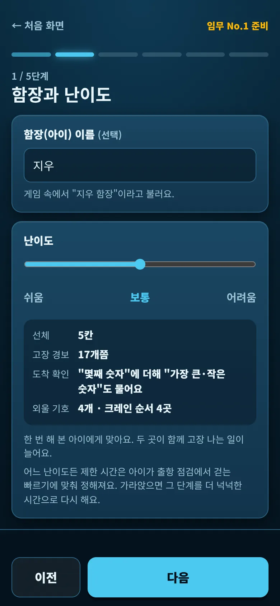
2함장과 난이도
아이 이름을 적으면 게임에서 "지우 함장"처럼 불러요. 비워 두면 그냥 "함장"이에요.
난이도는 쉬움 · 보통 · 어려움 중에서 골라요. 처음 하는 아이는 쉬움, 한 번 해 본 아이는 보통이 맞아요. 어느 난이도든 제한 시간은 아이가 걷는 빠르기에 맞춰 정해져요.
| 쉬움 | 보통 | 어려움 | |
|---|---|---|---|
| 선체 | 6칸 | 5칸 | 4칸 |
| 고장 경보 | 13개쯤 | 17개쯤 | 25개쯤 |
| 두 곳 동시 고장 | 2번 | 4번 | 8번 |
| 도착 확인 질문 | 몇째 숫자 | + 가장 큰·작은 숫자 | + 두 숫자를 차례로 |
| 외울 기호 | 3개 | 4개 | 5개 |
| 기호 보는 시간 | 7초 | 6초 | 5초 |
| 크레인 순서 | 3곳 | 4곳 | 5곳 |
| 걸음당 시간 여유 | 2.4배 | 1.9배 | 1.55배 |
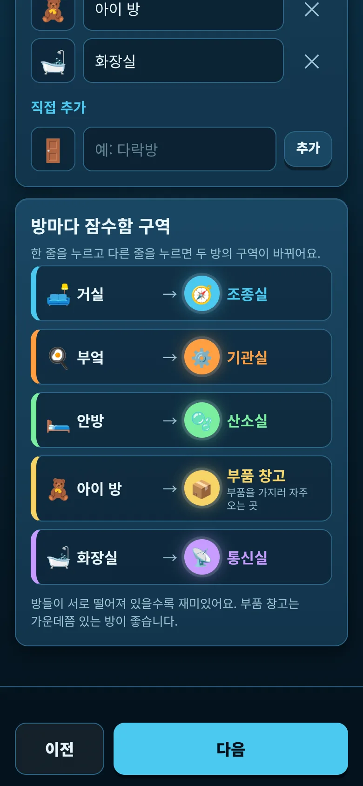
3방과 구역
아이가 걸어서 오갈 방을 4~6곳 골라요. 방 단추를 누르면 넣고, 다시 누르면 빼요. 목록에 없는 방은 직접 추가에 이름을 적고 추가를 눌러요.
고른 방은 차례대로 잠수함 구역이 돼요. 4곳이면 조종실·기관실·산소실·부품 창고, 5곳이면 통신실, 6곳이면 수문까지 생겨요.
- 구역을 바꾸려면 표에서 한 줄을 누르고 다른 줄을 눌러요. 두 방의 구역이 서로 바뀌어요.
- 부품 창고는 아이가 부품을 가지러 자주 가는 곳이에요. 집 가운데쯤 있는 방이 좋아요.
💡 방들이 서로 떨어져 있을수록 재미있어요.
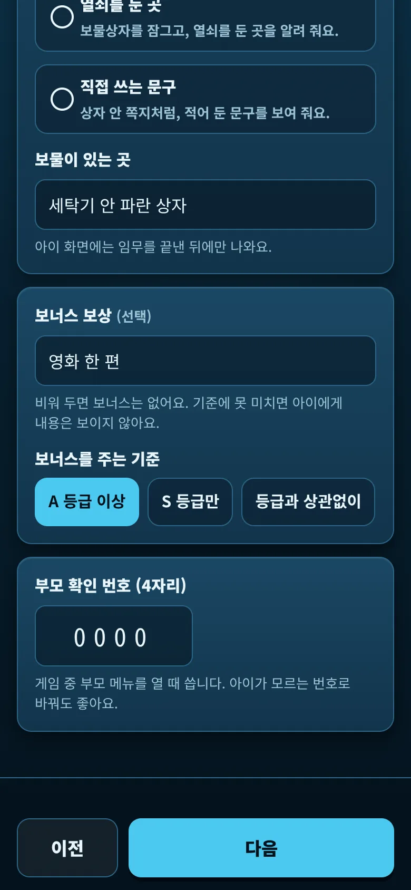
4보물과 보상
잠수함이 물 위로 올라오면 건져 올린 상자가 열리면서 보물 정보가 나와요. 알려 줄 방법을 하나 고르고 내용을 적어요.
- 숫자 자물쇠 번호 · 상자를 자물쇠로 잠가 두고 번호를 알려 줘요.
- 보물을 숨긴 곳 · 예: 세탁기 안 파란 상자
- 열쇠를 둔 곳 · 상자를 잠그고 열쇠 자리를 알려 줘요.
- 직접 쓰는 문구 · 상자 안 쪽지처럼 적어 둔 말을 보여 줘요.
보너스 보상은 비워 둬도 돼요. 적으면 A 등급 이상 · S 등급만 · 등급과 상관없이 중에서 주는 기준을 골라요. 기준에 못 미치면 아이에게 내용이 보이지 않아요.
부모 확인 번호 (4자리)는 게임 중에 부모 메뉴를 열 때 써요. 처음에는 0000이에요.
💡 확인 번호는 아이가 모르는 번호로 바꿔 두세요.
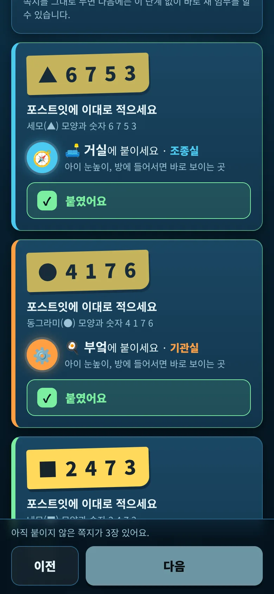
5쪽지 붙이기 · 보물 숨기기 · 바닥 치우기
이 단계는 폰을 들고 집 안을 돌며 해요. 방마다 카드가 한 장씩 있어요.
- 카드의 노란 쪽지 그림을 포스트잇에 그대로 적어요. 예: ▲ 6 7 5 3. 모양과 숫자를 크고 진하게.
- 카드에 적힌 방에 붙여요. 아이 눈높이, 방에 들어서면 바로 보이는 곳이 좋아요.
- 붙였어요를 눌러 체크해요.
- 간식을 넣은 상자를 적어 둔 곳에 숨기고 보물상자를 숨겼어요를 눌러요.
- 방 사이 바닥을 치우고 바닥을 치웠어요를 눌러요.
모두 체크하면 아래에 "쪽지와 보물상자, 바닥까지 모두 준비됐어요."가 뜨고 다음으로 넘어갈 수 있어요.
⚠️ 쪽지마다 모양과 숫자가 달라요. 다른 방의 쪽지와 바꿔 붙이지 마세요. 아이는 폰이 묻는 숫자를 그 방 쪽지에서 찾아야 도착이 확인돼요.
💡 쪽지를 떼지 않고 두면 다음에는 이 단계 없이 바로 새 임무를 할 수 있어요.
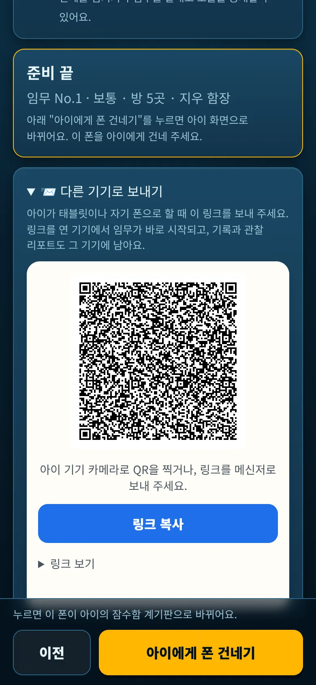
6관찰 준비와 폰 건네기
관찰자 예측은 골라 두면 좋아요(선택). 선체가 얼마나 깎일지, 가라앉아서 다시 도전할지, 가장 힘들어할 단계는 어디일지. 끝나고 관찰 리포트에서 실제와 비교해 줘요.
지켜보는 법에는 비상시에 쓸 확인 번호가 다시 나와요.
이제 아이에게 시작하게 해요. 두 가지 방법이 있어요.
- 이 폰을 아이에게 줄 때 · 맨 아래 아이에게 폰 건네기를 누르면 아이 화면으로 바뀌어요. 폰을 건네 주세요.
- 아이 태블릿이나 아이 폰으로 할 때 · 📨 다른 기기로 보내기를 펼쳐요. 아이 기기 카메라로 QR을 찍거나 링크 복사로 메신저에 보내요. 부모 대시보드의 📨 아이에게 보내기도 같은 링크를 만들어요.
💡 진행, 기록, 관찰 리포트는 링크를 연 기기에 남아요. 같은 링크를 다시 열면 하던 임무가 이어져요.
2게임 진행
여기부터는 아이 혼자 해요. 경보가 뜬 방으로 걸어가서, 쪽지 숫자로 도착을 확인하고, 짧은 수리 놀이를 해요. 출항 점검 뒤로 네 단계를 지나면 물 위로 올라와요.
단계 한눈에
| 단계 | 수심 | 새로 나오는 것 |
|---|---|---|
| 출항 점검 | 0m | 모든 방을 한 번씩 돌며 전원 켜기. 시간 제한 없음. 이때 걸음을 재요 |
| 1단계 잠항 | 300m | 고장이 하나씩 나요. 그 방에 가서 고쳐요 |
| 2단계 심해 | 800m | 두 곳이 한꺼번에 고장 나요. 부품 창고에서 부품을 챙겨 가야 하는 고장 |
| 3단계 보물 인양 | 1000m | 한 방에서 본 기호(좌표)를 외워 다른 방에 입력. 마지막엔 크레인 순서대로 방 돌기 |
| 4단계 긴급 부상 | 0m | 모든 고장이 섞여 나오고 시간이 조금 더 빠듯해요 |
단계마다 시작 전에 안내 화면이 나오고, 아이가 시작을 눌러야 시간이 가요. 단계가 끝나면 고친 고장과 놓친 고장을 보여 주고 다음으로 넘어가요. 마지막 단계 뒤에는 물 위로!예요.
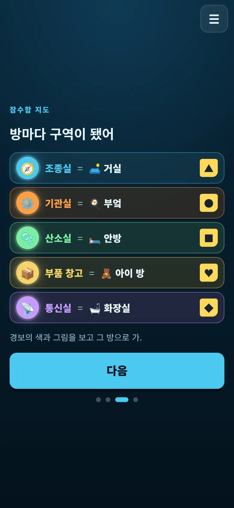
1브리핑
아이는 네 장짜리 브리핑을 넘겨 봐요. 표지에서 브리핑 듣기 → 이야기 → 잠수함 지도 → 하는 법 순서예요.
잠수함 지도에는 방마다 어느 구역인지와 쪽지 모양이 나와요. 숫자는 나오지 않아요. 마지막 장에서 출항 준비를 누르면 출항 점검이 시작돼요.
💡 게임 중에도 ☰ 메뉴의 🗺️ 구역 지도 다시 보기로 지도를 볼 수 있어요.
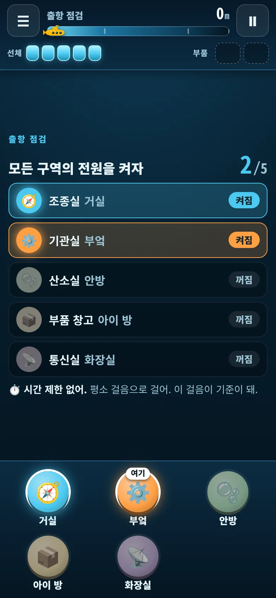
2출항 점검
아이는 모든 방을 한 번씩 걸어가서 전원을 켜요. 방에 가서 아래쪽의 그 방 버튼을 누르고, 쪽지를 보고 묻는 숫자를 누르면 "켜짐"으로 바뀌어요.
시간 제한이 없어요. 이때 방 사이를 걷는 시간을 재서, 뒤 단계의 제한 시간을 그 걸음에 맞춰요. 다 켜면 "네 걸음: 구역 사이 약 14초. 이 걸음에 맞춰 시간을 줄게"처럼 알려 줘요.
⚠️ 아이에게 "평소처럼 걸으면 돼"라고만 말해 주세요. 여기서 뛰면 뒤 단계의 시간이 빠듯해지고 위험해요.
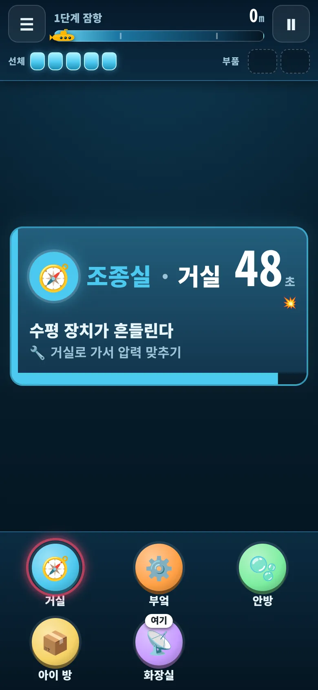
3경보가 뜨면
경보음과 함께 카드가 떠요. 카드에서 크게 보이는 것은 어느 방으로와 남은 초예요. 그 아래에 고장 이름과 할 일이 적혀 있어요.
- 💥 하나는 놓치면 선체 1칸, 💥💥는 2칸이 깎여요.
- 시간이 줄면 카드가 주황, 빨강으로 바뀌어요.
- 위쪽 계기판에는 단계와 수심, 선체 칸, 든 부품(2칸)이 보여요.
아래쪽 방 버튼 중 경보가 걸린 방은 테두리가 깜빡여요. "여기" 표시는 아이가 마지막으로 도착한 방이에요.
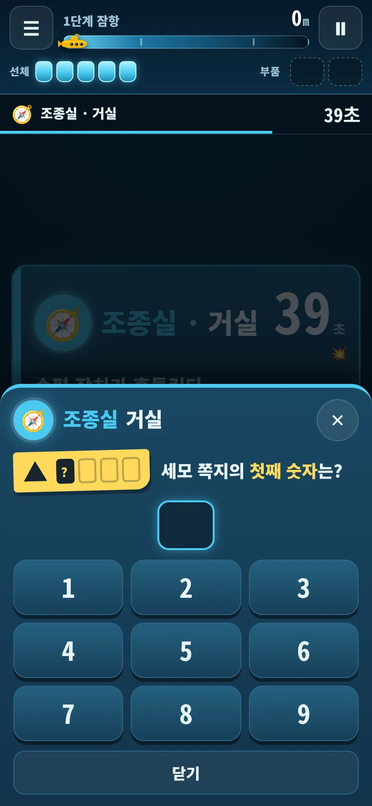
4도착 확인
방에 도착하면 그 방 버튼을 눌러요. "세모 쪽지의 첫째 숫자는?"처럼 쪽지 숫자를 묻고, 맞히면 그 방에 온 것으로 확인돼요. 질문은 매번 바뀌어요.
- 틀리면 "틀렸어. 쪽지를 다시 봐"가 뜨고 잠깐(2.5초) 잠긴 뒤 새 질문이 나와요.
- 고장이 없는 방이면 "이상 없음. 여기는 고장이 없어"라고 알려 줘요.
💡 판 위쪽 띠에는 가장 급한 경보의 남은 시간이 계속 보여요.
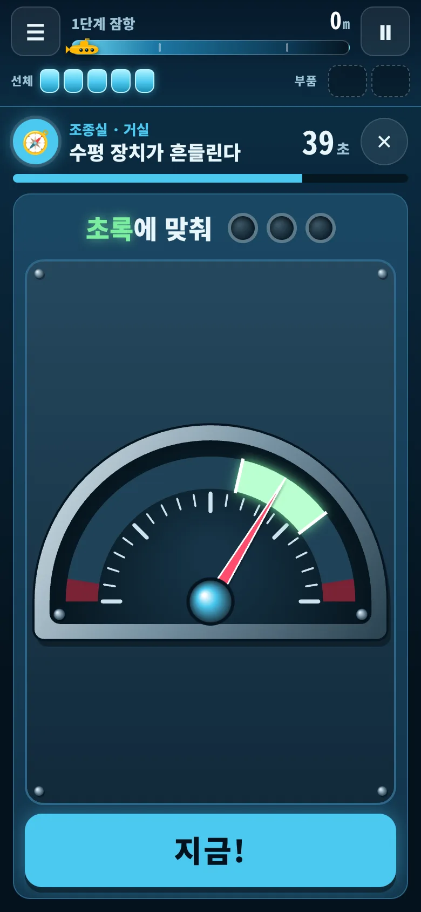
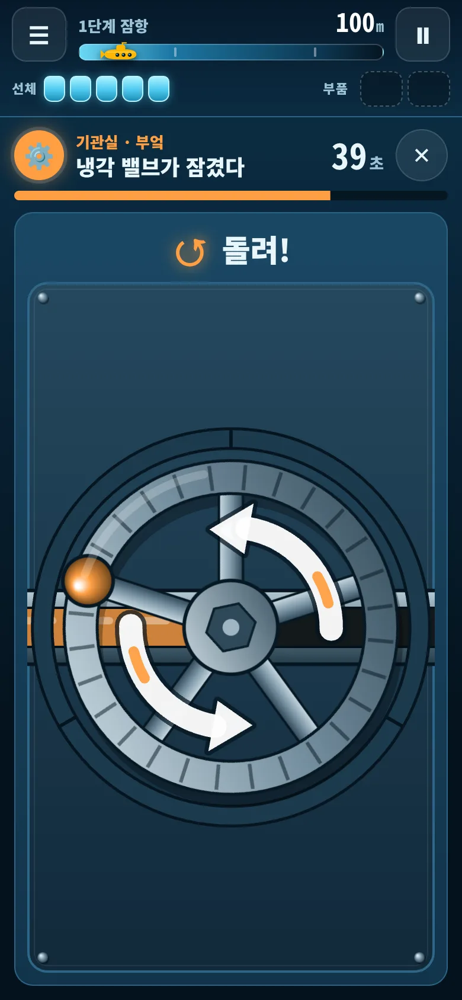
5수리 놀이
도착이 확인되면 바로 수리 판이 열려요. 위에는 고장 이름과 남은 초, 아래에는 손으로 하는 짧은 놀이가 있어요. 끝내면 "수리 완료"가 뜨고 경보가 사라져요.
- 밸브 돌리기 · 손가락으로 원을 그려 바퀴를 돌려요.
- 배관 잇기 · 조각을 눌러 돌려서 물길을 이어요.
- 압력 맞추기 · 흔들리는 바늘이 초록 칸에 올 때 지금!을 눌러요.
- 물 새는 곳 막기 · 물이 새는 구멍을 눌러 막아요.
- 펌프질 · 손잡이를 위아래로 끝까지 움직여요.
- 재시동 암호 · 불이 켜진 순서를 따라 눌러요.
더 급한 곳이 생기면 ✕로 판을 닫고 가도 돼요. 그 방에 다시 오면 도착 확인부터 다시 해요.
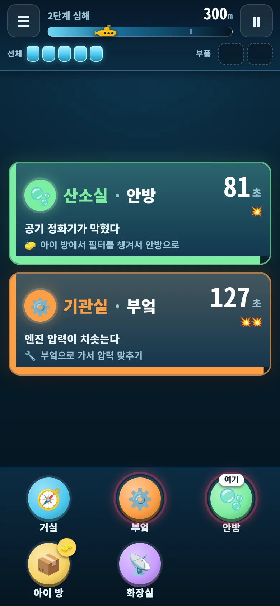
6심해: 두 곳 동시, 부품 챙기기
심해부터는 두 곳이 한꺼번에 고장 나요. 카드는 급한 것부터 위에 놓여요. 남은 시간이 짧은 쪽부터 고치면 둘 다 해낼 수 있게 시간을 줘요. 느긋한 쪽은 💥💥라 놓치면 더 아파요.
부품이 필요한 고장도 나와요. 카드에 "아이 방에서 필터를 챙겨서 안방으로"처럼 적히고, 부품 창고 방 버튼에 부품 그림이 붙어요.
- 부품 창고 방에 가서 도착 확인을 하면 "필터를 챙겼어"가 뜨고, 위 계기판의 부품 칸에 들어가요.
- 고장 난 방으로 가서 도착 확인 → 수리 놀이를 해요.
부품 없이 가면 "부품이 없어"라고 알려 줘요. 부품은 한 번에 2개까지 들 수 있어요.
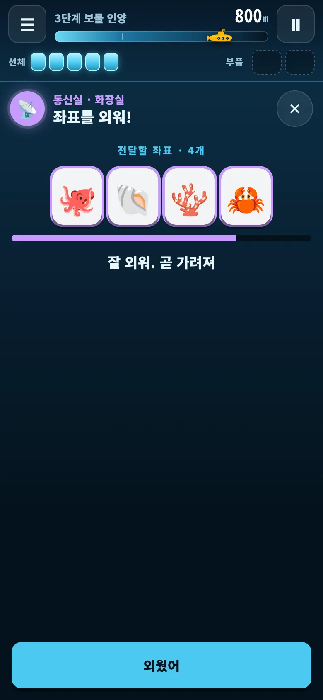
7보물 인양: 좌표 전달
"통신실의 좌표를 산소실에 전달하라" 같은 경보가 떠요. 먼저 좌표가 있는 방(화장실)에 가서 도착 확인을 하면 바다 생물 기호가 잠깐 보여요. 보통 난이도는 4개를 6초 동안 보여 줘요.
기호가 가려지면 다른 방(안방)으로 걸어가 도착 확인을 하고, 좌표를 입력해 판에서 외운 순서대로 기호를 눌러요.
- 틀리면 시간이 5초 깎이고 입력이 비워져요.
- 잊어버렸으면 좌표가 있는 방에 다시 가서 볼 수 있어요. 대신 걸어가는 시간이 들어요.
💡 아이가 기호를 어떻게 외우는지(소리 내어, 손가락으로, 이야기로) 지켜보세요. 관찰 리포트의 "기억" 칸과 함께 보면 재미있어요.
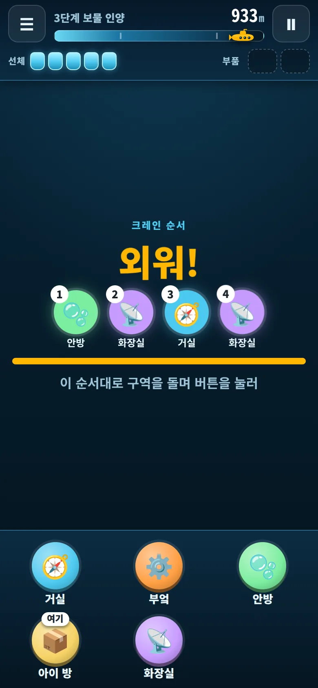
8보물 인양: 크레인 순서
보물 인양의 마지막은 크레인이에요. 방 순서가 잠깐 보였다가 가려져요. 아이는 외운 순서대로 방을 돌며 그 방 버튼을 누르고 도착 확인을 해요.
- 순서가 가려진 뒤에는 물음표 점과 남은 시간만 보여요.
- 순서 다시 보기 (-5초)로 한 번 더 볼 수 있어요.
- 순서가 다른 방에 가면 "순서가 달라"와 함께 5초가 깎여요.
- 시간 안에 못 끝내면 선체 2칸이 깎이고 순서를 처음부터 다시 보여 줘요.
크레인을 마치면 4단계 긴급 부상이에요. 지금까지 나온 고장이 모두 섞여 나오고 시간이 조금 더 빠듯해요.
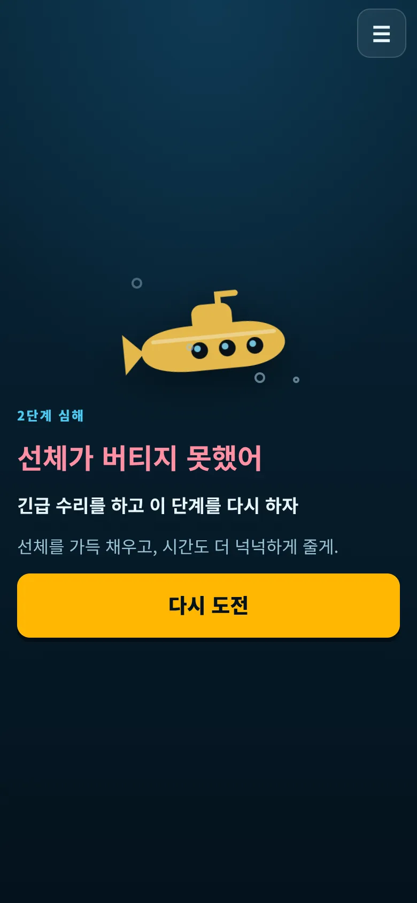
9가라앉으면
경보를 놓치면 선체가 깎여요. 선체가 0칸이 되면 "선체가 버티지 못했어" 화면이 떠요. 아이가 다시 도전을 누르면 선체를 가득 채우고 그 단계만 다시 해요.
다시 할 때는 단계 안내에 "다시 도전. 이번엔 시간이 더 넉넉해"가 나오고, 실제로 시간을 더 줘요. 앞에서 끝낸 단계는 다시 하지 않아요.
💡 가라앉아도 끼어들지 마세요. 다시 할수록 넉넉해져서 대부분 스스로 넘어가요.
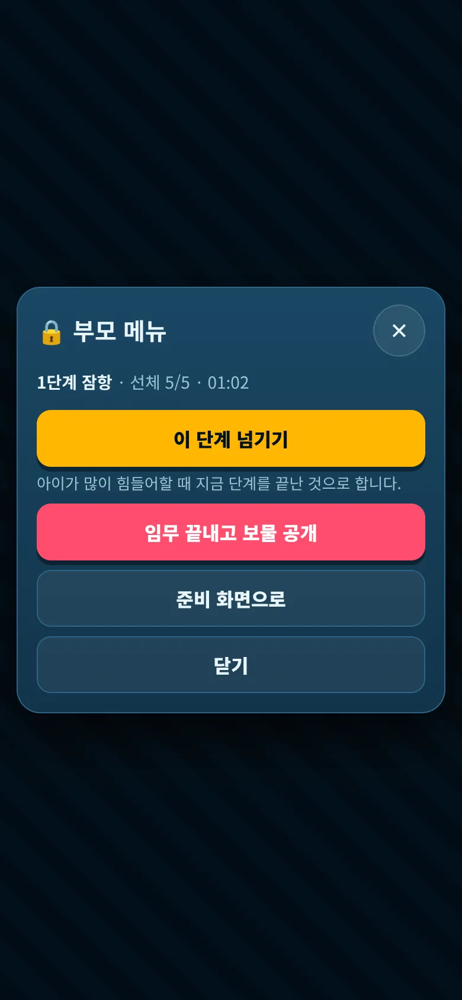
10게임 중 부모가 할 일
기본은 지켜보기예요. 아이가 급할 때 무엇부터 고치는지, 기호를 어떻게 외우는지 봐 주세요.
잠깐 멈춰야 하면 위 오른쪽 ⏸를 눌러요. 다른 앱으로 가거나 화면이 꺼져도 저절로 멈춰요. 돌아오면 ▶ 이어 하기를 눌러야 시간이 다시 가요.
비상시에만 ☰ → 🔒 부모 메뉴 → 확인 번호 4자리를 눌러요. 부모 메뉴를 여는 동안 게임은 멈춰요.
- 이 단계 넘기기 · 아이가 많이 힘들어할 때 지금 단계를 끝난 것으로 해요. 점수가 깎이고 리포트에 "부모가 넘김"으로 남아요.
- 임무 끝내고 보물 공개 · 남은 단계를 건너뛰고 바로 보물을 보여 줘요. 한 번 더 물으면 끝내고 공개를 눌러요. 등급은 C로 기록돼요.
- 준비 화면으로 · 준비 내용을 고칠 때.
메뉴를 닫으면 멈춤 화면이 남아 있어요. 아이가 ▶ 이어 하기를 누르면 돼요.
3끝난 뒤
잠수함이 물 위로 올라오면 아이가 혼자 결말을 한 장씩 넘겨 봐요. 마지막 장에서 아이가 폰을 돌려주면 관찰 리포트를 봐요.
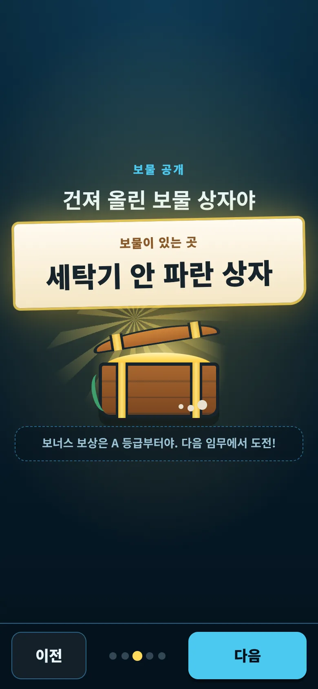
1물 위로, 보물 공개
결말은 다섯 장이에요. 다음으로 넘겨요.
- 임무 성공 · 잠수함이 물 위로 솟구쳐요.
- 임무 결과 · 등급(S·A·B·C), 걸린 시간, 남은 선체, 점수와 깎인 이유.
- 보물 공개 · 상자 열기를 누르면 부모가 적은 보물 정보가 나와요. 보너스는 기준을 넘었을 때만 내용이 보여요.
- 항해 일지 · 이번 임무 기록 그림. 사진으로 저장할 수 있어요.
- 임무 끝! · "부모님께 폰을 돌려주자."
점수는 100점에서 깎여요. 선체 1칸 손상 −6, 다시 도전 −12, 부모가 단계를 넘기면 −15, 기호·순서를 틀리면 −2, 쪽지 숫자를 틀리면 −1(8점까지)이에요. 90점 이상 S, 75점 이상 A, 55점 이상 B, 그 아래는 C예요.
💡 보물 정보는 아이가 상자를 열기 전까지 화면에 나오지 않아요. 아이가 상자를 찾으러 가면 함께 가 봐도 좋아요.
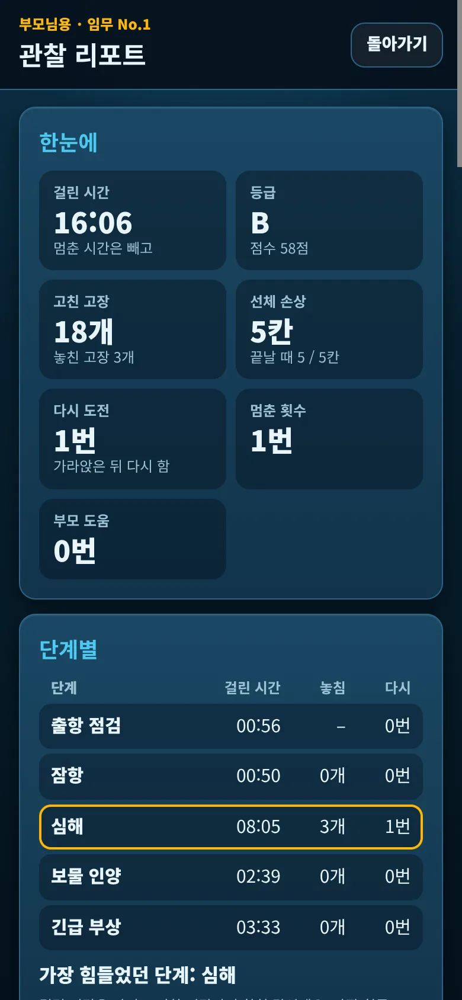
2관찰 리포트
마지막 장 임무 끝!에서 관찰 리포트 보기 (부모)를 눌러요. 위에서부터 이런 내용이 있어요.
- 한눈에 · 걸린 시간(멈춘 시간 빼고), 등급, 고친·놓친 고장, 선체 손상, 다시 도전, 멈춘 횟수, 부모 도움
- 단계별 · 단계마다 걸린 시간과 놓친 고장, 가장 힘들었던 단계
- 급할 때의 판단 · 두 곳이 함께 고장 났을 때 급한 쪽부터 고친 횟수
- 기억 · 좌표를 한 번에 맞힌 횟수, 크레인 순서 실수와 다시 보기
- 여유 · 걸음 · 도착 확인 실수 · 흐름 · 제한 시간을 얼마나 썼는지, 걸음이 빨라졌는지 느려졌는지, 시간 순서대로 있었던 일
- 예측과 실제 · 준비 때 고른 예측과 비교
- 이렇게 말해 주세요 · 다음 임무 제안 · 기록에서 고른 칭찬 문장과 다음 난이도 제안
💡 "이렇게 말해 주세요"의 문장을 그대로 읽어 줘도 좋아요. 결과보다 과정을 짚는 말이에요.
나중에 다시 보려면 게임 첫 화면의 결과와 관찰 리포트 다시 보기를 눌러요. 결과 화면이 다시 열리고, 마지막 장에서 리포트를 볼 수 있어요. 리포트는 아이가 게임을 한 기기에만 있어요.
3다음에 또 하기
쪽지를 떼지 않았다면 준비 없이 바로 새 임무를 할 수 있어요. 고장 나는 곳과 순서는 매번 달라져요.
- 같은 폰으로 · 마지막 장이나 게임 첫 화면에서 쪽지 그대로 새 임무를 눌러요. "보물 정보가 그대로인가요?"라고 물으면, 새 간식을 같은 곳에 숨겼을 때 보물 정보 그대로, 숨긴 곳을 바꿨으면 준비 화면에서 고치기를 눌러요.
- 다른 기기로 · 부모 대시보드의 잠수함 간식호 칸에서 📨 아이에게 보내기를 펼치고 🔁 같은 쪽지로 새 임무 링크 만들기를 눌러요. 새 링크를 보내면 돼요.
💡 같은 링크를 다시 보내면 새 임무가 아니라 하던 임무가 이어져요. 다음 날 새로 할 때는 꼭 새 링크를 만드세요.
?막혔을 때
"다음"이 눌리지 않아요
화면 아래 줄에 이유가 나와요. 예를 들어 "아직 붙이지 않은 쪽지가 3장 있어요." 그 단계에서 빠진 것을 채우면 넘어가요. 방은 4곳 이상, 보물 내용과 확인 번호 4자리는 꼭 있어야 해요.
쪽지가 떨어졌거나, 아이가 숫자를 외워 버렸어요
떨어진 쪽지는 준비 화면의 쪽지 붙이기 단계에서 그 방 카드를 보고 다시 적어 붙이면 돼요. 숫자를 새로 바꾸려면 그 단계 아래의 쪽지 새로 만들기를 눌러요. 모든 쪽지의 모양과 숫자가 바뀌니 다 떼고 새로 적어 붙인 뒤 다시 체크해요. 하던 임무는 이어지지 않고 새 임무로 시작해요.
아이가 쪽지 숫자를 자꾸 틀려요
틀리면 잠깐 잠긴 뒤 새 질문이 나오니 시간만 조금 들어요. 쪽지 글씨가 작거나 흐리면 더 크고 진하게 다시 써 주세요. 다른 방 쪽지와 바뀌어 붙지 않았는지도 봐 주세요.
전화가 와서 잠깐 멈추고 싶어요
위 오른쪽 ⏸를 누르면 시간이 멈추고 경보도 기다려요. 다른 앱으로 가거나 화면이 꺼져도 저절로 멈춰요. ▶ 이어 하기를 누르면 다시 시작해요.
창을 닫았거나 새로고침했어요
진행은 이 기기에 저장돼요. 게임 첫 화면의 임무 이어 하기를 누르면 멈춘 상태로 열리고, ▶ 이어 하기를 누르면 하던 데서 이어져요.
시간이 너무 빠듯하거나 너무 넉넉해요
제한 시간은 출항 점검에서 잰 걸음에 맞춰져요. 다음 임무에서 난이도를 바꿔 보세요(준비 화면 1단계). 가라앉으면 그 단계는 더 넉넉한 시간으로 다시 해요. 관찰 리포트의 "다음 임무 제안"도 참고하세요.
아이가 너무 힘들어해요
☰ → 🔒 부모 메뉴 → 확인 번호 → 이 단계 넘기기로 지금 단계만 넘길 수 있어요. 그만하고 싶어 하면 임무 끝내고 보물 공개로 바로 보물을 보여 줄 수 있어요. 이때 등급은 C예요.
확인 번호가 생각나지 않아요
처음 값은 0000이에요. 바꿨다면 준비 화면의 보물과 보상 단계(3단계)나 관찰 준비 단계의 "지켜보는 법"에서 볼 수 있어요.
아이 기기로 보냈는데 기록이 부모 폰에 없어요
진행, 기록, 관찰 리포트는 링크를 연 기기(아이 기기)에 남아요. 관찰 리포트는 아이 기기에서 열어 보세요.
보너스 보상이 안 나왔어요
보너스는 준비 때 고른 기준(예: A 등급 이상)을 넘었을 때만 보여요. 못 미치면 "다음 임무에서 도전!"이라고만 나오고 내용은 보이지 않아요. 기준은 준비 화면 3단계에서 바꿀 수 있어요.